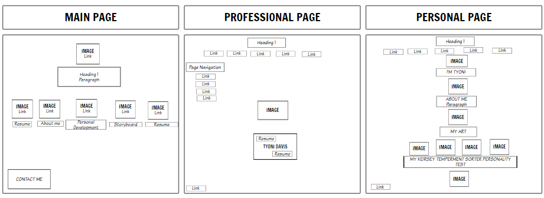
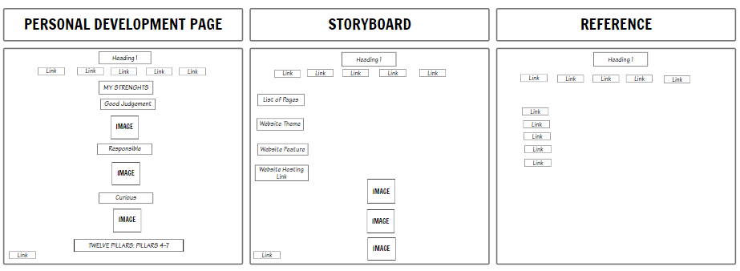
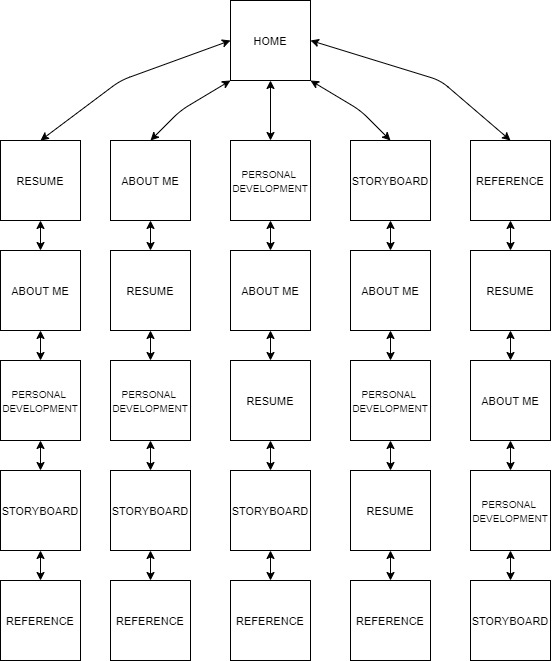

STORY BOARD
Home Page About me Personal Development Page Resume Reference Page
List of Pages
- Home Page: This page introduces the user to my website and it also provides them with links to the other pages of the site, It also includes a breif summary of who I am.
- Professional Page: This page includes my resume
- About me: This page showcases my traits and emotions. Likes, dislikes, hobbies etc. It's a page that basically tells the viewer all about me.
- Personal Development Page: This page showcases three of my strenghts and a summary of the twelve pillars from 4 - 7 and how I would apply each pillar to my life.
- Reference Page: This Page features all the page links I referenced while completing the website.
- Storyboard Page: Features a layout design of all webpages.
Website Theme
I chose a background color that is very subtle it makes it possible for the viewer to see the text on the webpage clearly, I kept a very professional feel to my website as to attract clients or employers and it contains all the information a potential employer or client might want to see. It features a layout that is also easy to navigate.
Website Features
My website feature a use of:
Hosting Link:


SITE MAP
s